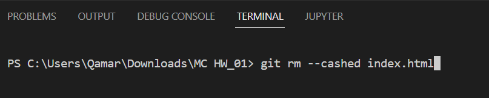

After downloading Git Install it and make a folder in which you are going to work. Open that folder in terminal and run "git init" command this will create a .git folder which will be hidden folder.

After that you need to set Git configuration values on a global or local project level .
The "git status" command displays the state of the working directory and the staging area. It lets you see which changes have been staged(shows in green color), which haven't(shows in red color), and which files aren't being tracked by Git.

Run git add command to add your files. The git add command adds a change in the working directory to the staging area. It tells Git that you want to include updates to a particular file in the next commit.
you can add all files at once by typing "git add ." or you can also do this by entering file name after git add e.g(git add index.html)
The git commit command captures a snapshot of the project's currently staged changes and you can also comment what you're commiting
The git rm command can be used to remove individual files or a collection of files. The primary function of git rm is to remove tracked files from the Git index.
Create an account on Github and make repository

a Git repository that's hosted on the Internet or another network.
git remote add origin "link of your repository"
The "git push" command is used to upload local repository content to a remote repository
git clone is primarily used to point to an existing repo and make a clone or copy of that repo at in a new directory, at another location
git clone "link of remote repository"
The git pull command is used to fetch and download content from a remote repository and immediately update the local repository to match that content.